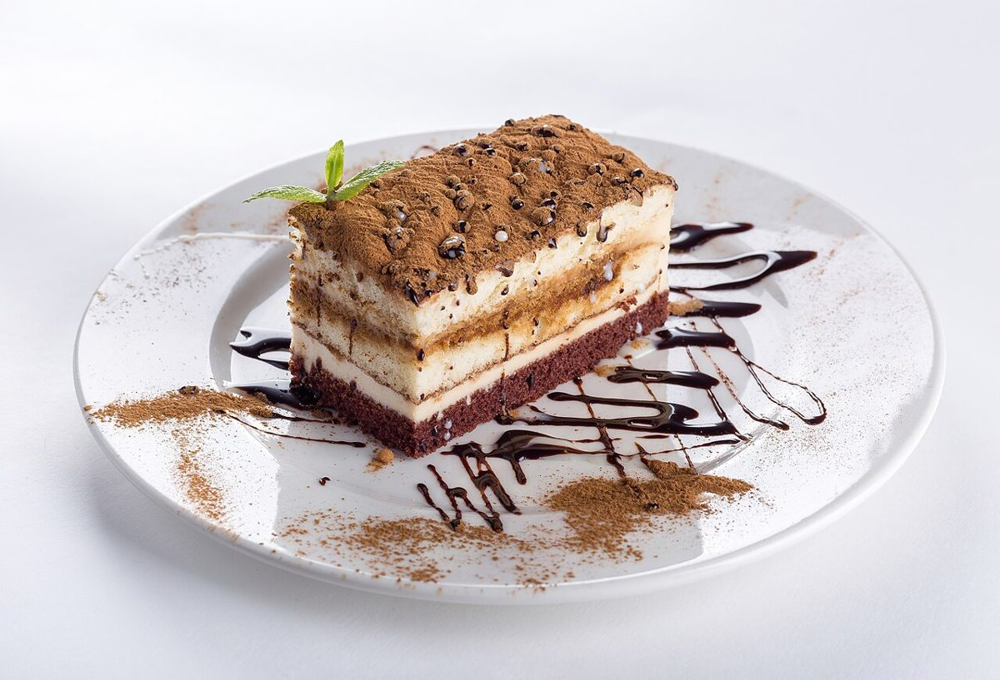
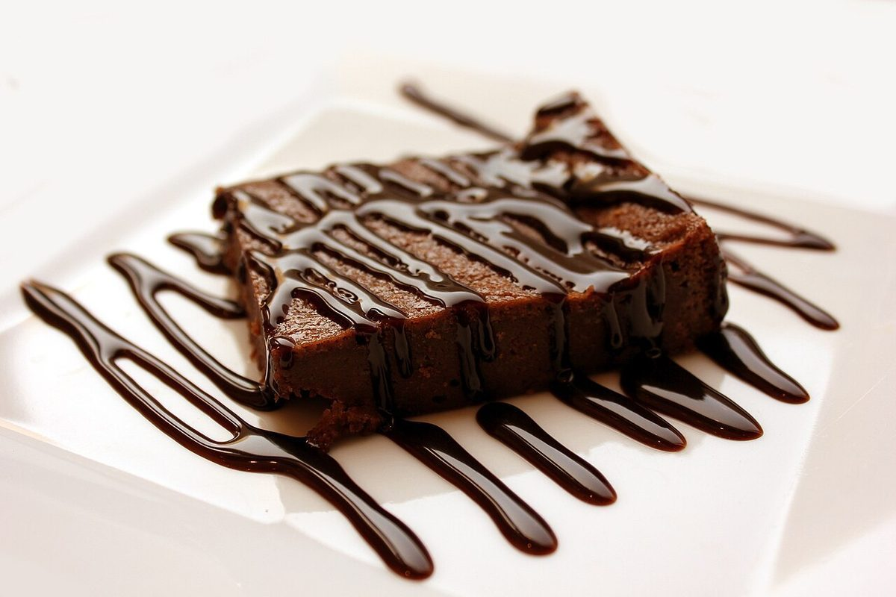
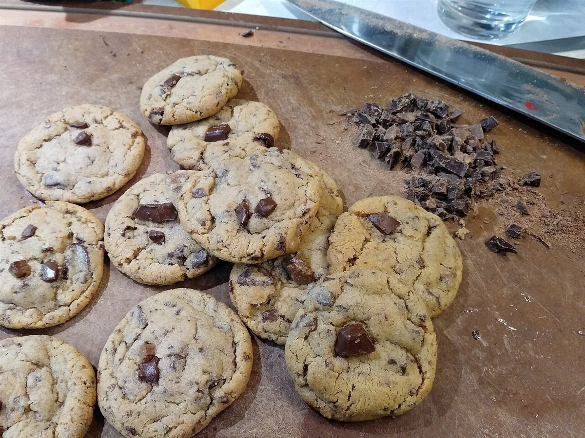
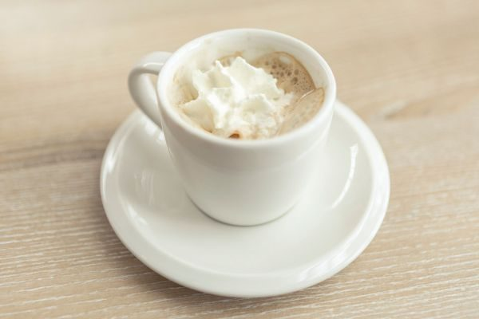
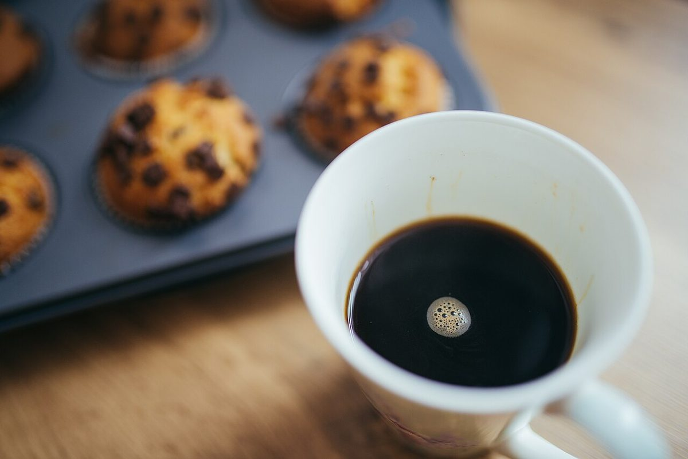
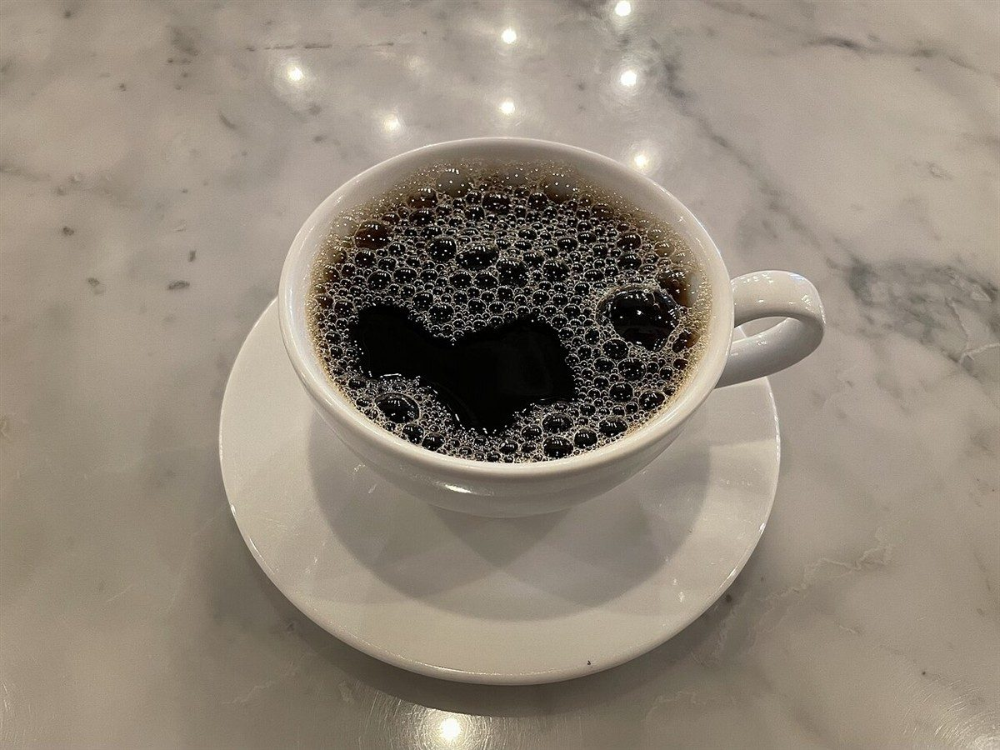
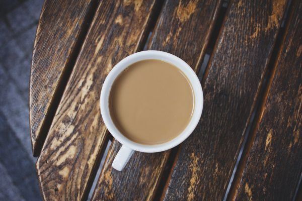
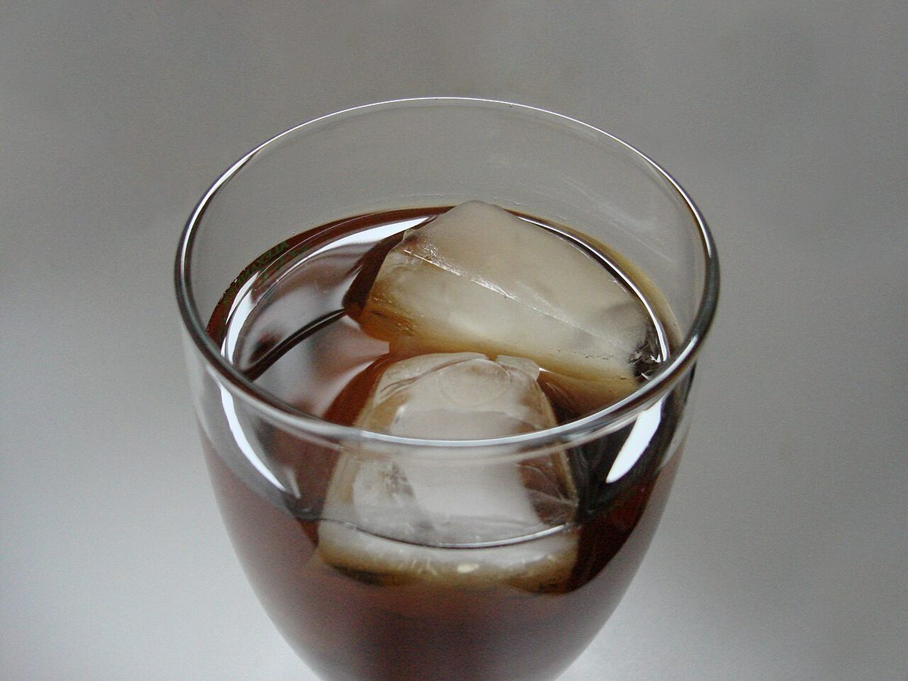
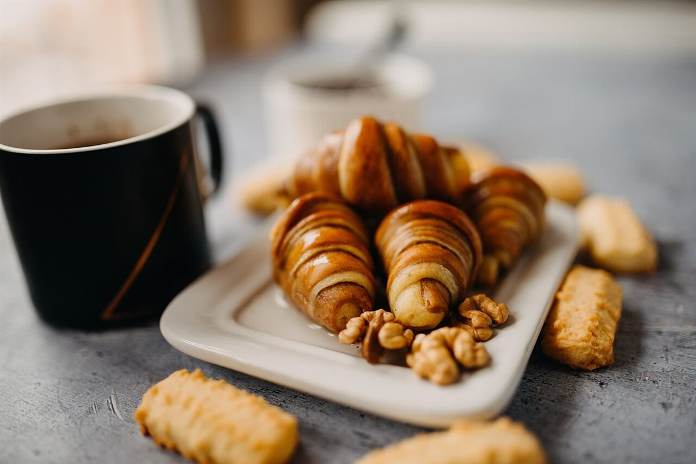

お店のこと
駅前の、クレープ専門店
monde は2024年7月9日、羽後本荘駅前にオープンしたクレープのお店。店主はクレープ専門店で働いた経験があると紹介されています。生地は「モチモチの甘い生地」で、冷めても食感が変わりにくいのが特徴とのこと。
- 店内は韓国のカフェをコンセプトにした、開放的な空間(イートイン7席)
- スイーツ系と惣菜系あわせて18種類のクレープと、ドリンク12種類(開店時の紹介)
- 今後は季節限定のクレープ、焼き菓子、パンも登場予定と紹介されていました
出典: 秋田タウン情報「monde モンド」(2024年8月)。取材時点の内容です。店名の由来は確認できていません。

メニュー
甘いクレープも、食事系クレープも
スイーツ系
バナナチョコ、クレームブリュレ など
惣菜系
ツナサラダ、金・土限定のいぶりがっこポテサラ など
ドリンク
12種類(開店時の紹介)
価格・最新の品書き
準備中 内容は変わることがあります。Instagramでご確認ください。




口コミ
こんな声が聞こえてきそう
イメージ例
生地がもちもちで、冷めてもおいしいのがうれしい。電車を待つ間のご褒美にぴったりでした。
イメージ例
甘いのと食事系、両方あって迷います。イートインの席でゆっくりできて落ち着きました。
イメージ例
店内がかわいくて、友だちとおしゃべりしながら食べました。また違う味を試したいです。
口コミは制作側が作成したイメージ例で、実際のお客様の声ではありません。






